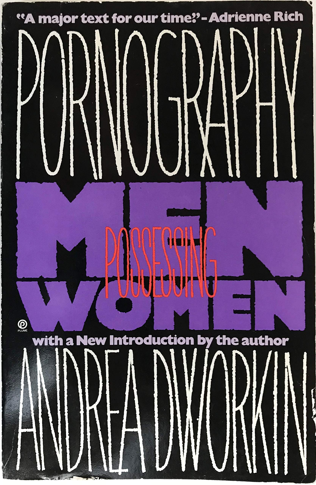

Andrea Dworkin is most often remembered for her role as a speaker, writer, and activist in the feminist anti-pornography movement.[54][52][60] In February 1976, Dworkin took a leading role in organizing public pickets of Snuff in New York City and, during the fall, joined Adrienne Rich, Grace Paley, Gloria Steinem, Shere Hite, Lois Gould, Barbara Deming, Karla Jay, Letty Cottin Pogrebin, Robin Morgan, and Susan Brownmiller in attempts to form a radical feminist antipornography group.[63] Members of this group would go on to found Women Against Pornography in 1979, but by then Dworkin had begun to distance herself from the group over differences in approach.[64] Dworkin spoke at the first Take Back the Night march in November 1978, and joined 3,000 women in a march through the red-light district of San Francisco.[65]
In 1981, Dworkin published Pornography: Men Possessing Women, which analyzes (and extensively cites examples drawn from) contemporary and historical pornography as an industry of woman-hating dehumanization. Dworkin argues that it is implicated in violence against women, both in its production (through the abuse of the women used to star in it), and in the social consequences of its consumption by encouraging men to eroticize the domination, humiliation, and abuse of women.[54][52][60]